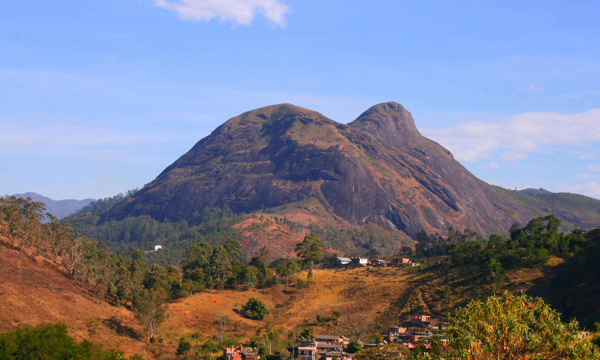
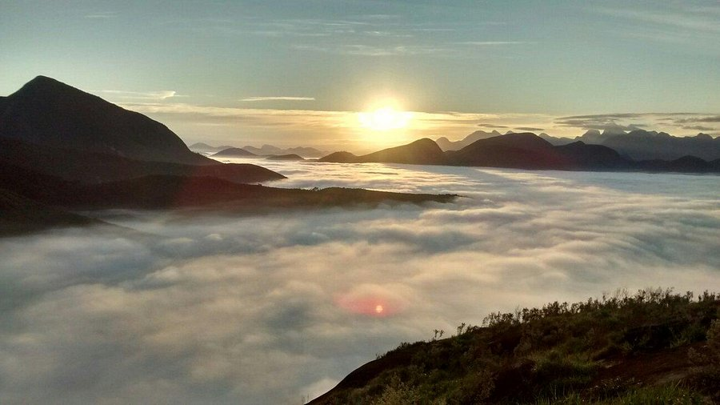
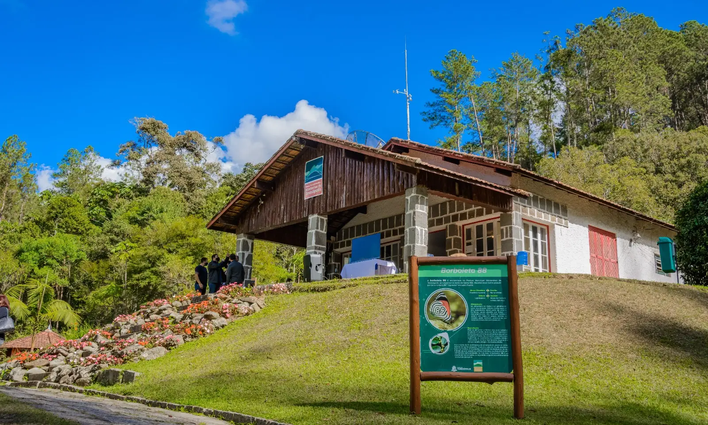
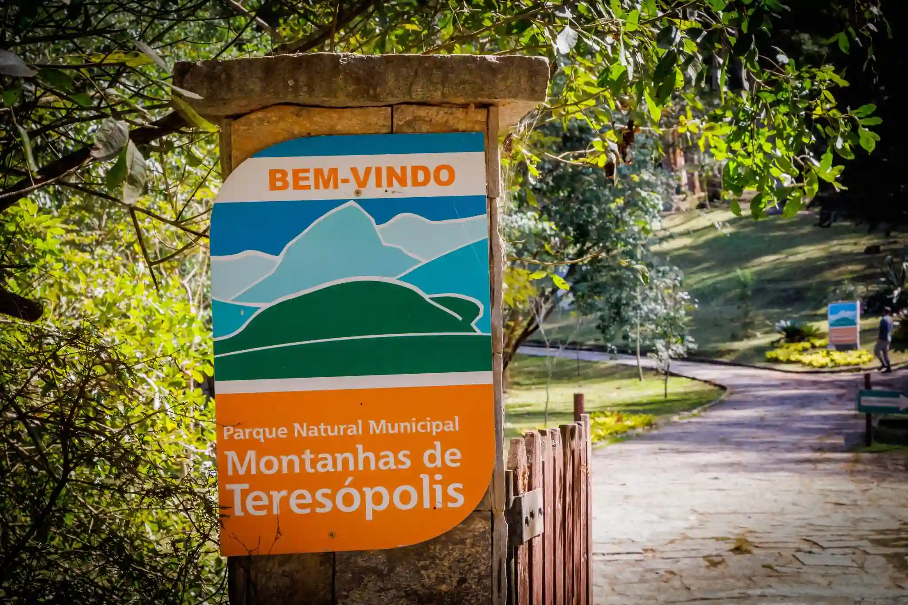
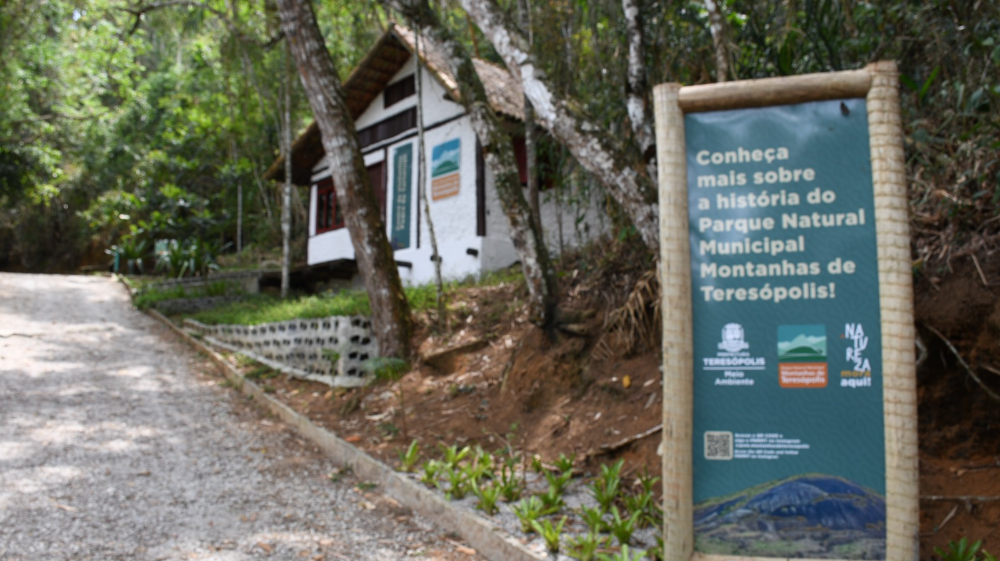

O Parque Natural Municipal Montanhas de Teresópolis é uma unidade de conservação localizada na área rural de Teresópolis, na Região Serrana do Rio de Janeiro. Com cerca de 4.400 hectares, o parque protege importantes remanescentes de Mata Atlântica e integra o Corredor Ecológico Central da Serra do Mar, sendo fundamental para a preservação da biodiversidade local e a conectividade entre outras áreas protegidas da região.
Apesar de ser menor em extensão do que parques estaduais e nacionais vizinhos, o Montanhas de Teresópolis se destaca por suas paisagens impressionantes, formações rochosas marcantes e trilhas que revelam mirantes naturais, florestas bem preservadas e cachoeiras. Entre os pontos mais conhecidos estão a Pedra da Tartaruga, a Pedra do Camelo e a Trilha do Vale dos Lúcios, que oferecem vistas panorâmicas e oportunidades para caminhadas de diferentes níveis de dificuldade.
O parque é bastante procurado por trilheiros, escaladores, fotógrafos e praticantes de observação de aves, além de ser um espaço importante para a educação ambiental e o contato direto com a natureza. É também um abrigo para espécies como o gavião-pato, o sagui-da-serra-escuro e diversas variedades de bromélias e orquídeas.A administração do parque é feita pela prefeitura de Teresópolis, que mantém ações de conservação, pesquisa e monitoramento. A visitação é gratuita, mas controlada, com regras para garantir a preservação do ecossistema. Há trilhas sinalizadas e áreas de visitação organizadas para receber o público de forma segura e consciente.
O Parque Natural Municipal Montanhas de Teresópolis é, assim, um verdadeiro tesouro natural dentro do município, oferecendo experiências de ecoturismo e lazer ao mesmo tempo em que contribui para a proteção ambiental da Serra do Mar.



O Parque Natural Municipal Montanhas de Teresópolis está localizado na zona rural do município de Teresópolis, a cerca de 90 km do Rio de Janeiro. O acesso principal ao parque é feito pelo bairro Santa Rita, com entrada sinalizada pela Estrada da Barragem, após o bairro de Albuquerque.É possível chegar de carro, com trechos asfaltados e uma curta parte em estrada de terra. Há estacionamento disponível na entrada do parque.Para quem vem de ônibus, existem linhas municipais que saem do centro de Teresópolis até o bairro de Santa Rita, porém é recomendável confirmar os horários com antecedência, pois o transporte na zona rural pode ser limitado.O parque é de fácil acesso para visitantes que desejam explorar trilhas, mirantes e a natureza preservada da Serra dos Órgãos, sem se afastar muito da área urbana.
Sede Santa Rita Endereço: Rodovia BR-116, Km 74 s/n - Santa Rita, Teresópolis - RJ /Telefone: (21) 2043-3626, ramal 423.
Sede Pedra da Tartaruga Endereço: Serv. Pedro Mendes Silva Filho, 58, Granja Florestal